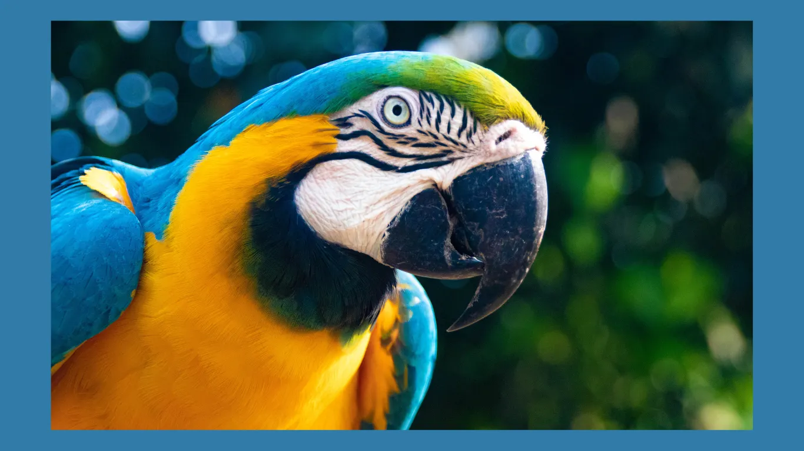

Our Artistic Touch
UNIQUE ART
OUR LATEST ART

ART COLLECTIONS
ABOUT
Welcome to Rob Valero
At Rob Valero, we believe that art is not just an object, but an experience. We are a dedicated team of art enthusiasts committed to bringing unique, captivating, and thought-provoking pieces into your space. Our mission is to connect talented artists with art lovers who appreciate the value of creativity and originality.
Our Mission
Our vision is to create a world where art is accessible to everyone and where every piece tells a story. We curate a diverse collection of artworks that resonate with various tastes and styles, ensuring that each piece you discover with us is as unique as you are.
NEWS
London Art Night
London Art Night, August 11, 2024,The art world is abuzz today as emerging artist Rob Valero unveiled his latest exhibition...
Our European Partners
At Rob Valero, we are proud to continue our strong and fruitful relationships with our European partners. These partnerships are integral to our mission of fostering creativity, innovation, and cultural exchange across the globe.
London Art Night
London Art Night, August 11, 2024,The art world is abuzz today as emerging artist Rob Valero unveiled his latest exhibition, "London Art Night" on the popular gallery Artsphere, located in the heart of London. The exhibition, has been hailed as a groundbreaking moment in contemporary art. The exhibition, which launched at midnight, attracted over 50,000 visitors within the first 24 hours. Art critics and enthusiasts alike are praising Lawson for her innovative approach, which many believe signals a new era for digital art. Join us for London Art Night, an evening celebrating the vibrant art scene of the city. Explore captivating exhibitions, live performances, and interactive installations across unique venues. Whether you're an art enthusiast or curious explorer, this night promises creativity, culture, and inspiration in the heart of London. Don't miss this unforgettable artistic experience!
Our European Partners
At Rob Valero, we are proud to continue our strong and fruitful relationships with our European partners. These partnerships are integral to our mission of fostering creativity, innovation, and cultural exchange across the globe. By working closely with some of Europe's most esteemed galleries, museums, and cultural institutions, we are able to bring diverse perspectives and groundbreaking art to audiences worldwide. Our European partners, including Talent Europe, Life Art, have been instrumental in helping us curate a rich tapestry of artistic expression. These collaborations not only allow us to showcase the works of established and emerging European artists but also provide opportunities for cross-cultural dialogue and exchange. Through joint exhibitions, artist residencies, and educational programs, we have seen the power of art to transcend borders and create a shared language of creativity.
GALLERIES

Echoes Of Emotions
"Echoes of Emotion" is an evocative abstract art collection, exploring the complex spectrum of emotions through bold forms and dynamic colors.
Essence in Simplicity
"Essence in Simplicity" is a striking minimalism art collection that celebrates the beauty of reduction, focusing on the purity of form, color, and space.
Wild Whispers
"Wild Whispers" is a captivating art collection that pays homage to the beauty, grace, and mystery of the animal kingdom.
Urban Pulse
"Urban Pulse" is a dynamic street art-inspired collection that brings the raw energy and vibrancy of the city streets into the heart of your home
Echoes Of Emotions

"Echoes of Emotion" is an evocative abstract art collection, exploring the complex spectrum of emotions through bold forms and dynamic colors. Each piece in this collection is a visual symphony, where shapes and hues dance together to create a visceral experience that resonates with the viewer's inner world. The collection is characterized by its use of fluid lines, fragmented geometries, and layered textures, inviting the audience to interpret and connect with the artwork on a personal level. The interplay of light and shadow, along with the intentional use of negative space, gives each piece a sense of depth and movement, mirroring the ebb and flow of emotions we experience in life. In "Echoes of Emotion," the artist captures the intangible—feelings of joy, sorrow, passion, and contemplation—translating them into powerful visual statements. The collection is both a journey and a reflection, encouraging viewers to explore their own emotional landscapes and find meaning in the abstract. This collection is not just a series of paintings; it is an invitation to feel, to reflect, and to immerse oneself in the vibrant echoes of the human experience. Whether seen from afar or up close, "Echoes of Emotion" offers a unique, transformative experience that lingers in the mind and heart long after the viewing.
Essence In Simplicity
"Essence in Simplicity" is a striking minimalism art collection that celebrates the beauty of reduction, focusing on the purity of form, color, and space. This collection invites viewers to pause and contemplate the power of simplicity, where less truly becomes more. In "Essence in Simplicity," each piece is meticulously crafted to strip away the unnecessary, leaving only the most essential elements. Clean lines, geometric shapes, and a restrained color palette define the collection, creating an atmosphere of calm and introspection. The use of negative space is a crucial aspect of the works, allowing the viewer's mind to wander and fill in the gaps, engaging with the artwork on a deeper level.
Wild Whispers

"Wild Whispers" is a captivating art collection that pays homage to the beauty, grace, and mystery of the animal kingdom. Each piece in this collection explores the essence of various animals, capturing their unique spirit and the silent stories they tell through their eyes, movements, and natural habitats. The collection features a diverse range of artistic styles, from realistic portrayals that highlight intricate details of fur and feathers, to abstract interpretations that emphasize the energy and aura of these creatures. The use of bold brushstrokes, vibrant colors, and dynamic compositions brings each animal to life, making them the focal point of any space.
Urban Pulse
"Urban Pulse" is a dynamic street art-inspired collection that brings the raw energy and vibrancy of the city streets into the heart of your home. This collection captures the essence of urban culture, transforming everyday spaces into bold, expressive environments filled with personality and edge. The "Urban Pulse" collection features a curated selection of artworks that draw inspiration from graffiti, murals, and urban textures. Each piece is a reflection of the gritty, spontaneous, and often rebellious spirit of street art, reimagined for home decor. Vivid colors, bold lines, and striking contrasts define the collection, creating visual statements that are as powerful as they are stylish. Whether it's the layered spray paint effects, the bold typography, or the abstract interpretations of cityscapes, this collection brings a sense of movement and life to any room. The artworks are designed to evoke the feeling of walking through a vibrant city, where every corner holds a new story, and every wall is a canvas.
Many Hands, One Global Mission
Step into a world of inspiration and innovation at our upcoming artist gallery events, where creativity knows no bounds. These events are more than just exhibitions—they are immersive experiences that connect you with the artists and their unique visions.
Discover a diverse range of styles and mediums, from contemporary painting and sculpture to avant-garde installations and digital art. Each event showcases the talents of both emerging and established artists, offering a platform where traditional techniques meet cutting-edge creativity.
As you explore the galleries, you'll have the opportunity to engage directly with the artists, gain insights into their creative processes, and delve deeper into the stories behind their works. Whether you’re an art connoisseur, a casual admirer, or simply curious about the arts, these events provide a rare chance to experience art in an intimate and personal way.